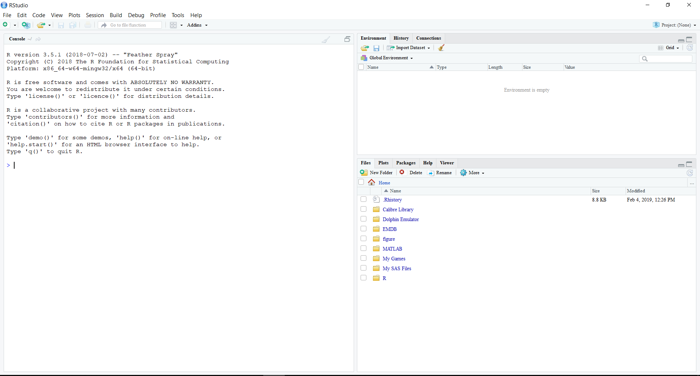
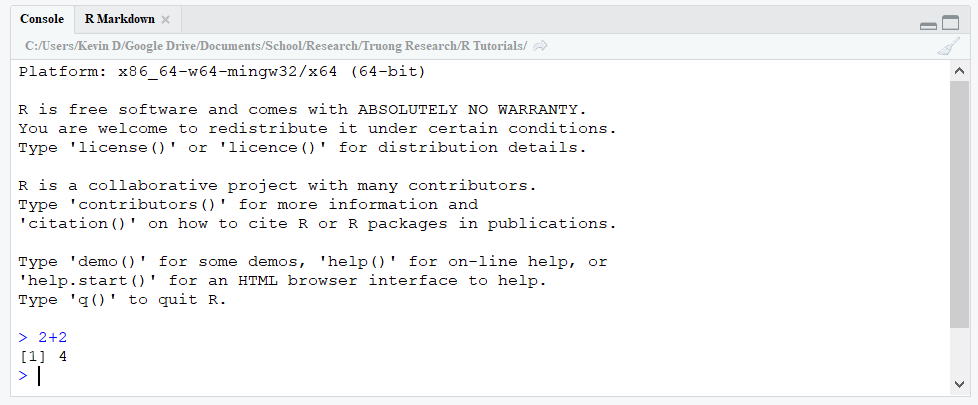
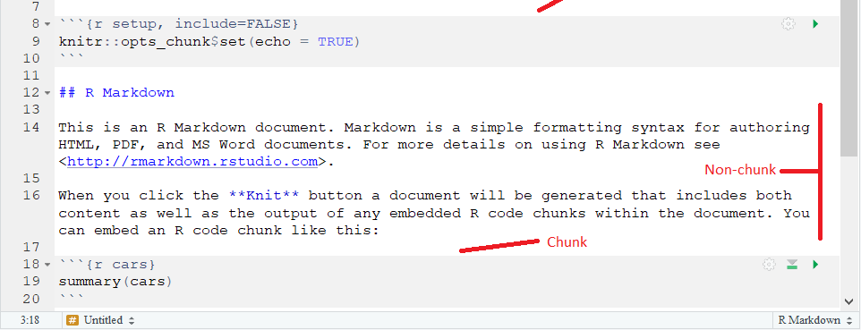
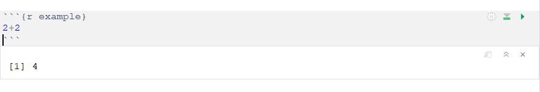

2 Introducing R and Rstudio
2.1 Intro
The goal of this tutorial is to complete Objective 1; learn the interface of RStudio and understand the fundamentals of how R works. Those who understand the following can skip this tutorial:
The “difference” between R and RStudio
How to install and open R and Rstudio
The interface of RStudio and why after installing both, one only needs to open and work in RStudio
What packages are, what a working directory is, and how RStudio handles file locations/location references
If you don’t fully understand these points, I strongly recommend going through this tutorial or just reading the specific sections which are necessary.
2.2 Why use R for data analysis?
While R is necessary for many statisticians and data scientists due to it’s computation power and great flexibility, it may not be clear how R is useful for scientists looking to do data processing and simple analyses. However, R has many advantages over other popular data analysis software suites such as SAS or SPSS, even for investigators who do not require R’s advanced capabilities.
- R is free to download and use
- SAS and SPSS are very costly to use and/or require access through an employer license
- R is easy to download and install on Windows, Mac, and Linux
- R takes up less space to install then other such software
- R is open-source
- Users can expand the functionality of R through add-ons called packages
- Capabilities of R are continually growing as doesn’t require large-scale releases to expand functionality
- Data processing in R is very easy
- Can import datasets from most other programs, including Excel, SAS, and SPSS
- Creating subsets of your data, creating new variables, selecting specific observations and variables is very easy
- Great flexiblity in these tools
- Data visualization tools in R are very extensive
- Very flexible tools for creating custom graphs and tables
- Advanced functionality often used in practice by scienitists is available in R
- Very robust mixed modeling, principal component, factor analysis, structural equation modeling, etc.
- Will improve one’s understanding of statistics
- Key part of understanding statistics is through real data analysis
- Due to the breadth of its data analysis tools and the way R is operated, understanding R will foster an improved understanding of statistics
- It is very easy to share your output from R
- Can easily select to display only the output you are interested in
- Easy to save and load figures, datasets, etc. created in R
- Due to R using programming through scripts (to be discussed later), your analyses are completely and easily reproducibile and shareable
- Can save your results and code in a report-style form with notes using R Markdown (to be discussd later)
- R provides reproducibility for your analyses
- Use of scripts means every step of your analysis is documented and can be easily shared
2.3 R and RStudio: What is the difference?
First time users of R are often confused as to the difference between R and RStudio. RStudio is actually an add-on to R: it takes the R software and adds to it a very user-friendly graphical interface. Thus, when one uses RStudio, they are still using the full version of R while also getting the benefit of greater functionality and usability due to an improved user interface. As a result, when using R, one should always use RStudio; working with R itself is very cumbersome. In these tutorials, from Chapter 3 onwards R will be used to reference R and RStudio with the assumption that the reader is operating in RStudio.
Since RStudio is an add-on to R, you must first download and install R as well as RStudio, two steps which are done separately. On your computer, you will see R and RStudio as separate installed programs. When using R for data analysis, you will always open and work in RStudio; you must leave R installed on the computer for RStudio to work, even though you will likely never open R itself.
2.4 Installing R and RStudio
As discussed above, you must download and install both R and RStudio. First, the installer for R can found by opening the following link:
https://cran.r-project.org/mirrors.html
and then selecting the mirror link closest your location. After opening this mirror link, you will see “Download and Install R” with links for Windows, Mac, and Linux installers. Always select the newest version posted. Then run the installer and follow the instructions.
Second, for RStudio, the installer can found at the following link:
https://www.rstudio.com/products/rstudio/download/
for Windows, Mac, and Linux (Ubuntu). Scroll due to “Installers for Supported Platforms”, open the choosen platform’s link, run the installer after downloading, and follow the instructions. The instructions for the installer will eventually ask you where R itself has when been installed. Generally it defaults to the correct path on your system for R though you may have to find where you have installed R and type the path into the RStudio installer manually.
2.5 The interface of RStudio
When you open R Studio for the first time, you should see the following interface:

2.5.1 Console
The large window on the left side is the Console. You can think of this as the “calculator” for R Studio. This is were all of the input, calculations and output are contained. In fact, if you were to run R and not R Studio, this Console is the only window you would see; R Studio adds all of the other interface components that you see. One simple command is to add two numbers. Let’s calculate 2+2 in R. The > symbol indicates the current line in the Console, with the pointer at this line incidated by a blinking vertical bar. To input a command (2+2 for example) into R, you simply type this command in the current line and press enter. R will print the output from the command below the input. R will also print out messages corresponding to the input in the Console. In R, each command is considered a single line; you cannot have multiple commands on the same line unless you separate the commands in the single line with a ;. Try typing 2+2;3+3 in the Console and view the output. R will automatically seaprate the commands using ; and print each command’s output in a separate line. Now, try 2+2 3+3 in the Console. You see R returns an error indicating that something what wrong when R tried to execute the command.

Note that R is not space sensitivty, meaning you can places as many spaces as you want between the components of your commands. For example, try the commands 2 + 2 in your console. You will see R completes the commands as expected without any errors. This holds for all commands in R and can be used to neatly format your code (especially when creating scripts which is discussed below).
2.5.2 Scripts
While the Console forms the workhorse of R, operating solely in the Console is very cumbersome. Instead of typing your commands in the Console each time you run R, we will instead create a script. A script is a list of R commands that is saved as a text file to then be submitted into R line by line. Scripts are what makes R so useful as they allow easy reproducibility of your analysis since you have a typed list of what you did, as well as making your analysis easy to share with others since the typed list is a text file. Scripts are saved as a .R extension which can be read by most text editors (e.g., Notepad in Windows). To create a new script you can select
File > New File > R Script
at the top of R Studio. You should see the Console window go to the bottom and a new, empty window appear above the Console.

This new window is where your scripts that are open will appear; each script that you have loaded is marked by a tab at the top of the window (notice there is now a single tab for your new script with the default name “Untitled1”). Anytime you change a script, the text becomes red and an * appears to indicate that it has been edited since it was last saved. To save the script, select the icon below the tabs that looks like a blue floppy disk. Scripts are saved as .R files, which are essentially text files (meaning they can also be edited and opened in a text editor such as Notepad on Windows).
Each “line” in your script corresponds to a line to be inputted into the R console. You can extend a command across multiple lines in your script; R Studio is intellegent enough to interpret these lines as a single command/“line” for the Console. After you write these commands in your script, you then have R read them one by one into the Console. This is done by highlighting the lines of interest and selecting the Run button in the upper right; you also can use the shortcut CTRL+Enter in Windows. To quickly run all of the script, you can quickly highlight the whole script’s text using CTRL+A in Windows and then select Run (or CTRL+Enter). When running the script, you will see each line be fed into the Console below with the corresponding output and messages returned.
2.5.3 RMD Files
Included with these tutorials are a set of scripts which were used to create all of the content contained in them. Usually, scripts are saved as .R files. However, you will notice that all of these are saved as .RMD files. These are called R Markdown files, which are explained in detail at a later chapter of these tutorials. However, it will be very useful when going through these tutorials to run the included scripts yourself to clearly see the code as well as obtain hands-on practice in running the code inside R. When you open the .RMD file, you will notice both the pain text used in that file’s tutorial as well as some R code inside of grey boxes called chunks. You can ignore the lines which begin and end with – for now.

Each chunk is a set of R code, that is a “piece of a script”, with the entire “script” composed of the combination of these pieces. Each time you run the code in a chunk, the output from that code will be printed beneath the chunk.

This makes it very easy to learn each piece of the code in an interaction fashion, as you can edit each chunk’s code just as you would edit a piece of your script. To run the code in a chunk, simply press the green triangle icon in the upper right corner of the chunk. To run all of the code in chunks above the chunk of interest, press the grey triangle icon directly to the left. This is needed when the chunk of interest depends on the results from chunks above it in the .RMD file. In this way, these .RMD files are like “advanced” versions of scripts, i.e. scripts with additional features (output prints below the chunk instead of in the console and you can easily accompany your R code with text detailing the code by using the white space outside the chunks). Thus, the best way to use these tutorials is the following. As you are reading through the HTML files, you should have the corresponding .RMD file open as well. Run each piece of code in the .RMD file as you come across it in the HTML file. In this way, you can combine your reading with hands-on practice by replicating what you have read at the same time. These R Markdown files are especially useful for creating detailed reports to document your statistical analyses. Please see the R Markdown chapter in these tutorials for more information.
2.5.4 Environment
The upper right-hand window in the R Studio interface contains the Environment. See the Chapter 3 for more information on this window and the Environment in general.
2.5.5 Plots, Packages, and Help
Finally, the lower right-hand window of the R Studio interface contains various components, each separated by a tab. The “Files” tab is a graphical way of opening files in R. Generally, it is easier to use the commands in R through your script so we move on to the next tab. The “Plots” tab is where all plots that you create in R will show up; see Chapter 5 for more details. The “Packages” tab is where you can install new packages and view the ones that you have already installed. Packages are add-ons for R that expand it’s capabilities. To install a new package, in the Packages tab select the Install button and type in the names of the package you are interested in. This works like a search engine where as you type, packages which have matching characters in their name will appear for you to select. Whenever you load R, you must always “turn on” any packages that are required for your analysis. This is most easily done by using the library() function. We discuss functions in detail later one; for now, to turn on package named ex, use the command library(ex). Include this command in your script at the beginning so that you load up the packages you need each time your run your script. Lastly, we have the “Help” tab. Here is where you can access the R documentation to help with any issues you encounter in R or to use as a source of information about R.
2.6 File Directories in R
When working in R you often will have to reference various external files, for example datasets that you want to load. To reference the external file, you will use its file path. However, the concept of working directories makes this process much easier. It would be a pain to have to type the full file path when refering to an external files. The working directory is the default directory that R looks for when you specify a file name. That is, you just provide the file name, and R will look in the working directory for this file. To see what your working directory is, use the command get.wd(); R will print the working directory’s path in the Console. By default, when you load a script, R will set the working directory to the directory where the script is. To set a new working directory, use set.wd() and provide the directory’s name in quotes inside the parentheses.